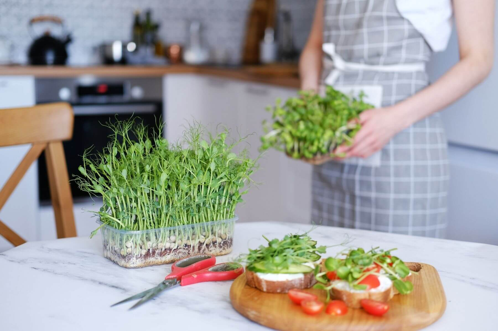
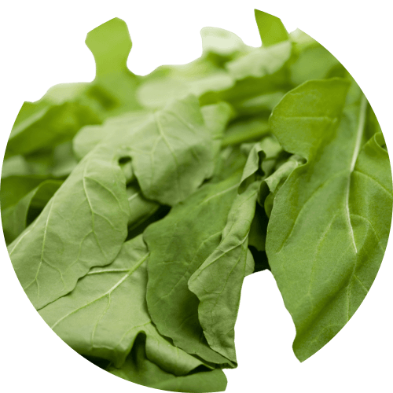
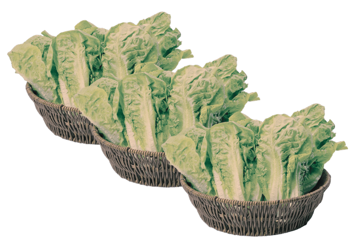
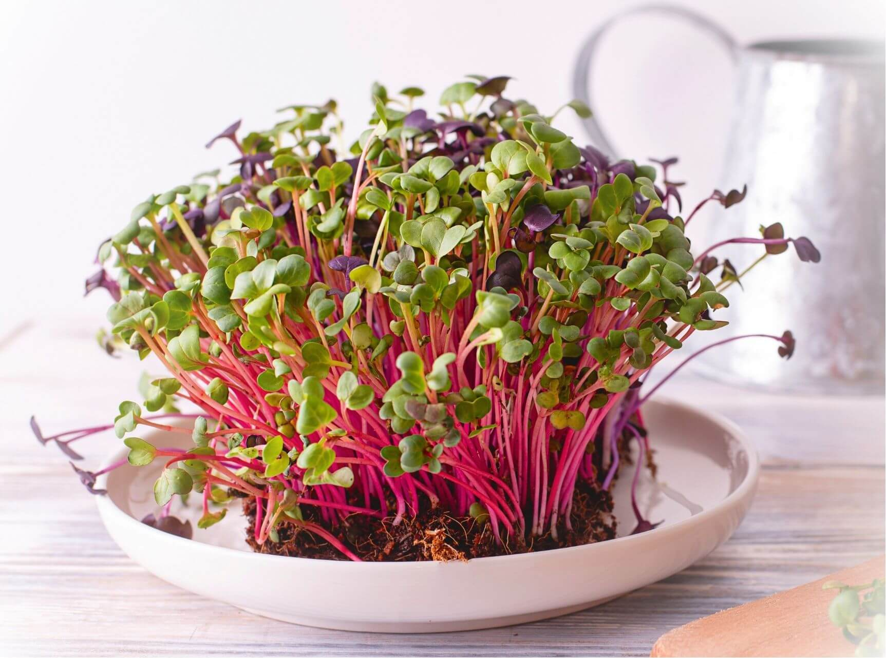
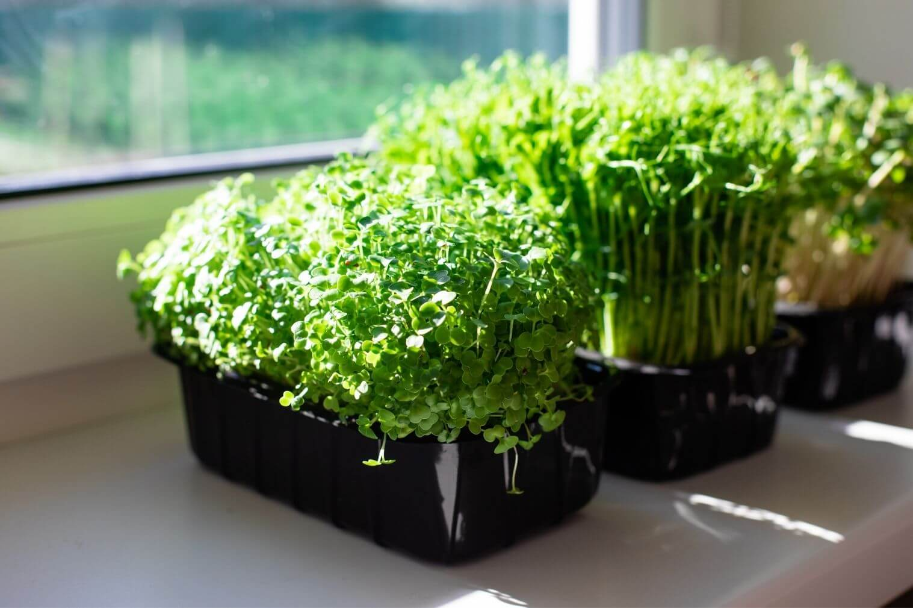
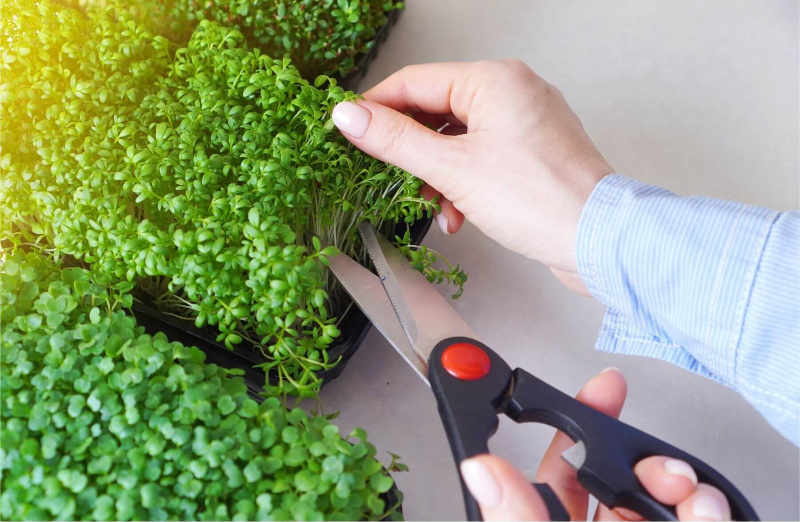
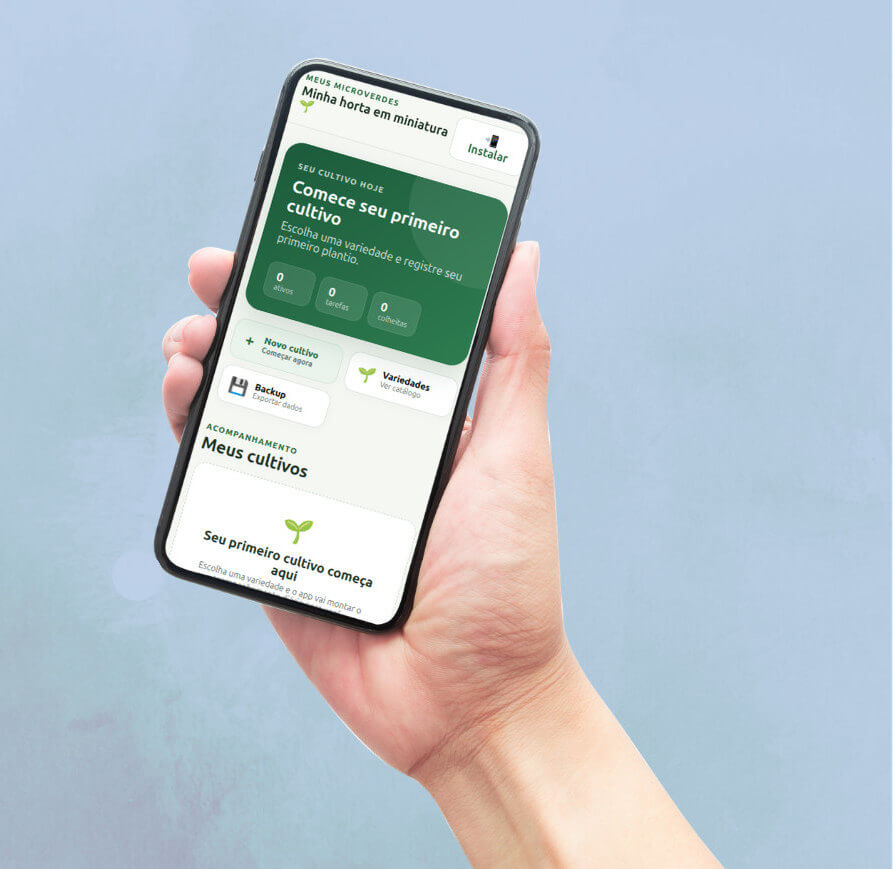
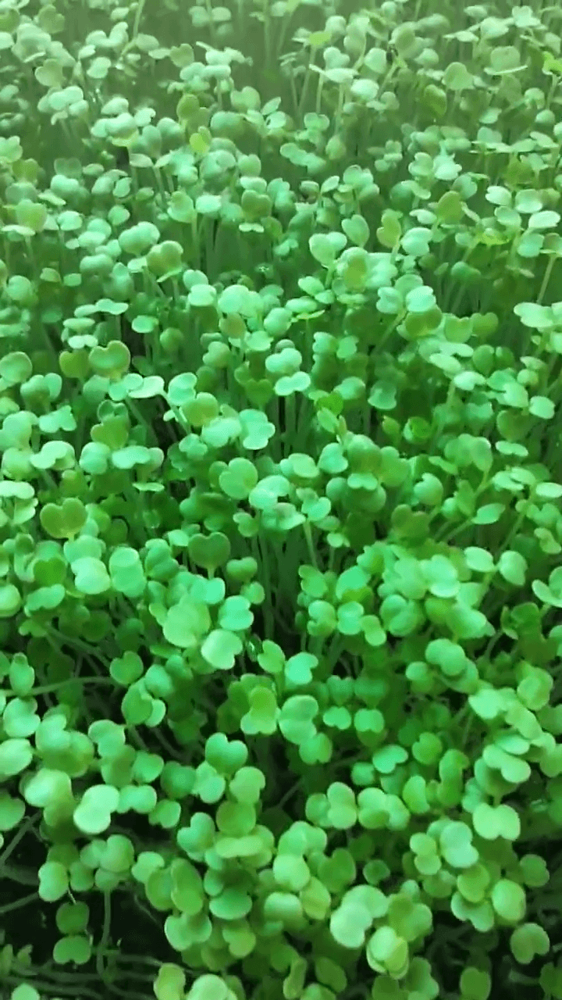

O guia passo a passo "Meus Microverdes" + o aplicativo que acompanha cada plantio, do primeiro dia à colheita.
QUERO COMEÇAR MEU CULTIVO

Verduras que murcham em 2 dias na geladeira.

Saladas que se repetem e ninguém quer variar.
Vontade de saber de onde vem o que você come.
Com Microverdes, você planta hoje e colhe em poucos dias, fresquinhas e saudáveis.
O Passo a Passo Meus Microverdes reduz o cultivo a três decisões: o substrato certo, o tempo de luz e a rega correta.
Em vez de "testar e errar", você segue um roteiro fase por fase: germinação, blackout, crescimento e colheita, que evita os 3 erros que fazem iniciantes desistirem: mofo, talos moles e sementes que não germinam.
Dia 1: você semeia a primeira bandeja.
Dia 3: os brotos aparecem no blackout.
Dia 5: a bandeja vai para a luz e fica verde.
Dia 7 a 14: você colhe e serve no prato.
E na semana seguinte, começa de novo com uma ou mais variedades novas se quiser.

Germinação em bandeja

Na janela da cozinha

Colhendo com tesoura
No prato, fresquinho
Você não recebe apenas um guia em PDF. Recebe também o App Meus Microverdes, que acompanha cada bandeja do plantio à colheita.

Microverdes são um complemento alimentar e não substituem uma dieta equilibrada nem acompanhamento profissional.
O que você recebe hoje
Valor total: R$ 152,98
R$ 37,98
à vista ou até 8x de R$ 5,52
"Minha filha agora come salada todo dia! Ela mesma colhe os microverdes de rúcula."
Juliana, Campo Grande
"Colho na janela do apê. O app me lembra de girar a bandeja e registrar tudo."
Marcos, São Paulo
"Nunca imaginei que conseguiria cultivar algo. Em 10 dias estava colhendo mostarda!"
Carla, Curitiba
"As crianças amam ajudar. O diário do app virou programação em família."
Rafael, Florianópolis
Resultados variam conforme ambiente, clima e dedicação de cada pessoa.

Nosso objetivo: tornar o cultivo de microverdes simples para qualquer pessoa.
Microverdes são cultivados há anos por quem gosta de comida fresca, mas a maioria dos conteúdos disponíveis é fragmentada, técnica demais ou cheia de detalhes que confundem quem está começando.
O Guia Meus Microverdes reune em um só lugar, as práticas mais conhecidas de cultivo, organizadas em um passo a passo claro, do plantio à colheita, e acompanhadas por um aplicativo que ajuda você a manter a rotina.
O objetivo não é fazer você virar agricultor. É fazer você colher seu primeiro prato em casa, na próxima semana.
Não vendemos um sonho. Vendemos um caminho simples, testado e seguro para você colher alimento fresco dentro de casa, mesmo sem experiência, sem quintal e sem tempo sobrando.
Ensinar qualquer pessoa, mesmo sem "dedo verde", a cultivar microverdes em substrato, com potes reciclados, fibra de coco ou manta — do jeito que couber na sua rotina.
Reduzir a dependência de verduras de mercado, que muitas vezes murcham antes de serem consumidas. Você escolhe o que usa no cultivo, sem agrotóxicos.
Com o aplicativo, você nunca fica perdido: o app mostra o que fazer hoje, registra o que aconteceu e avisa quando é hora de colher.
Reaproveitar embalagens, usar fibra de coco (subproduto da indústria) e compostar o substrato usado. Pequenas escolhas conscientes, dentro da sua cozinha.
7 dias para testar, sem risco. Se, seguindo o guia, você não gostar, devolvemos 100% do valor. Basta um e-mail.
Risco zero para você!
Não. Basta luz natural indireta ou uma luminária simples. 4 a 6 horas de luz por dia já são suficientes.
Uma bandeja cabe no balcão ou na janela. Potes reciclados de morango ou uva (3 a 5 cm de profundidade) já funcionam.
Sim, é uma atividade leve para fazer em família, com supervisão de um adulto. O guia tem um capítulo dedicado a envolver crianças no cultivo.
Cerca de 5 minutos. Observar, regar por baixo e girar a bandeja. O aplicativo te orienta no que fazer a cada dia.
Por e-mail, logo após a confirmação do pagamento. Você recebe o Guia completo em PDF + acesso ao aplicativo Meus Microverdes.
Use sementes próprias para cultivo de microverdes. O guia explica como escolher e onde comprar. Evite sementes tratadas quimicamente (com corantes artificiais).
Não é obrigatório. O guia mostra alternativas ao substrato tradicional, como fibra de coco e manta de cultivo. Você pode começar com terra vegetal fina, que é barata e fácil de encontrar.
Você não precisa de quintal, não precisa de experiência e não precisa de muito tempo. Só precisa começar.
QUERO COMEÇAR AGORA